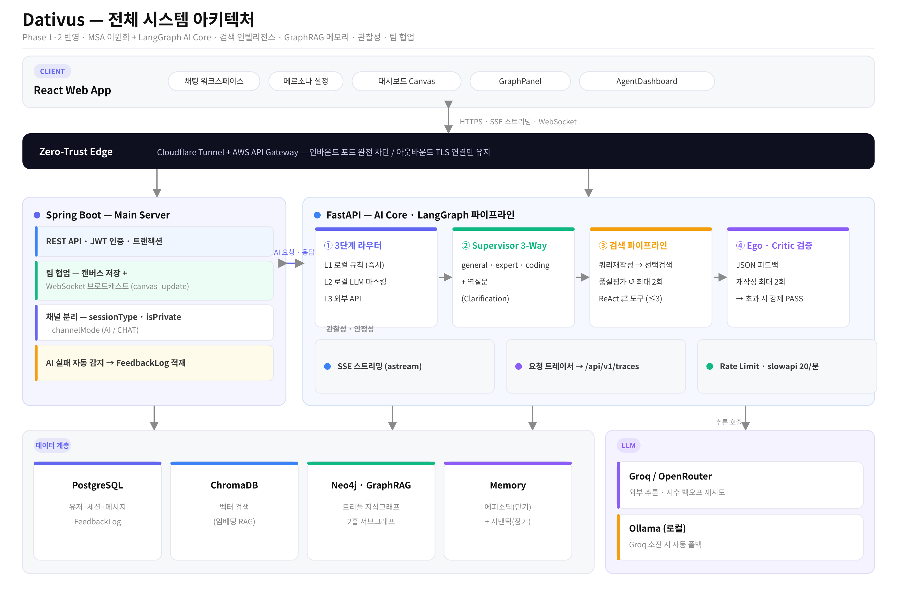
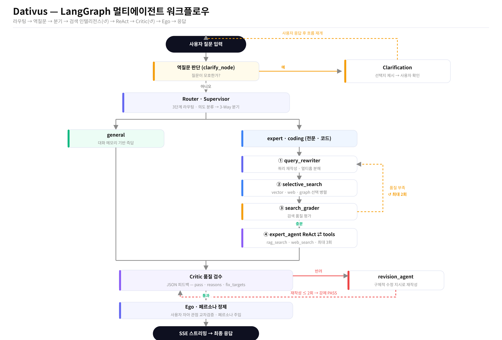

MAIN PROJECT
2026
메인 프로젝트
Dativus
보안과 비용을 동시에 잡은 "팀 전용 AI 팀원" 플랫폼
PROBLEM + ARCHITECTURE
단일 LLM 챗봇은 전문성 부족(불만족 사유 75.6%)과 개인화 맥락 유지의 어려움이라는 한계가 뚜렷했고, 퍼블릭 AI 사용 시 사내 기밀 유출 위험도 컸음. Spring Boot(비즈니스 로직)와 FastAPI(AI 코어·SSE 스트리밍)로 서버를 이원화하고, Cloudflare Tunnel + AWS API Gateway로 Zero-Trust 네트워크를 구성.


KEY DECISIONS
- MSA 이원화 — 단일 Spring Boot로 SSE를 처리하면 Java 블로킹 I/O 특성상 동시 접속자 증가 시 가용성이 급격히 저하되어, 일반 REST는 Spring Boot(블로킹, 트랜잭션 강점) / AI 추론·SSE는 FastAPI(asyncio 논블로킹)로 역할 분리
- LangGraph 채택 — 에이전트 간 상태를 그래프 노드/엣지로 명시적으로 관리해 Recursion Limit 기반 Deadlock 방지와 조건부 분기가 가능. AutoGen/CrewAI 대비 상태 전이 제어 유연성이 높고 FastAPI 비동기 환경과 통합이 용이
- ChromaDB 채택 — Pinecone/Weaviate 같은 상용 서비스 대신, 온프레미스 설치로 벡터 데이터 외부 유출 위험 제거 + Python 네이티브 통합 + 무료 오픈소스(운영비 0원)라는 이유로 선택
TROUBLESHOOTING + 성과
- 에이전트 간 자가 검증 루프에서 판단 기준이 충돌해 무한 루프(Deadlock) 발생 → LangGraph의 Recursion Limit으로 검증 순환을 최대 3회로 제한, 초과 시 Safety-Fallthrough 모드로 자동 전환해 강제 응답 송출
- Groq API 무료 플랜의 분당 호출 한도 초과로 429 에러 빈발(특히 멀티에이전트 병렬 팬아웃 구간) → 지수 백오프(1→2→4초) 재시도 후 로컬 Ollama(Llama-3)로 자동 Fallback 전환해 서비스 중단 방지
100% (30/30)
라우팅 정확도
100% (48/48)
장애 자동 복구율
최대 50%↓
외부 API 비용 절감
DEV LOG — 시행착오의 기록
AI 코어 개발
에이전트 자가검증 루프 Deadlock, Groq Rate Limit 429 에러 빈발
백엔드 통합
Spring Boot 경유 SSE 중계 시 스레드 점유·지연 발생 → FastAPI 직접 연결로 구조 변경(v5.0)
인프라
ChromaDB OS 기본 볼륨 사용 시 디스크 공간 부족·I/O 병목 → 48GB 전용 외장 SSD로 이전